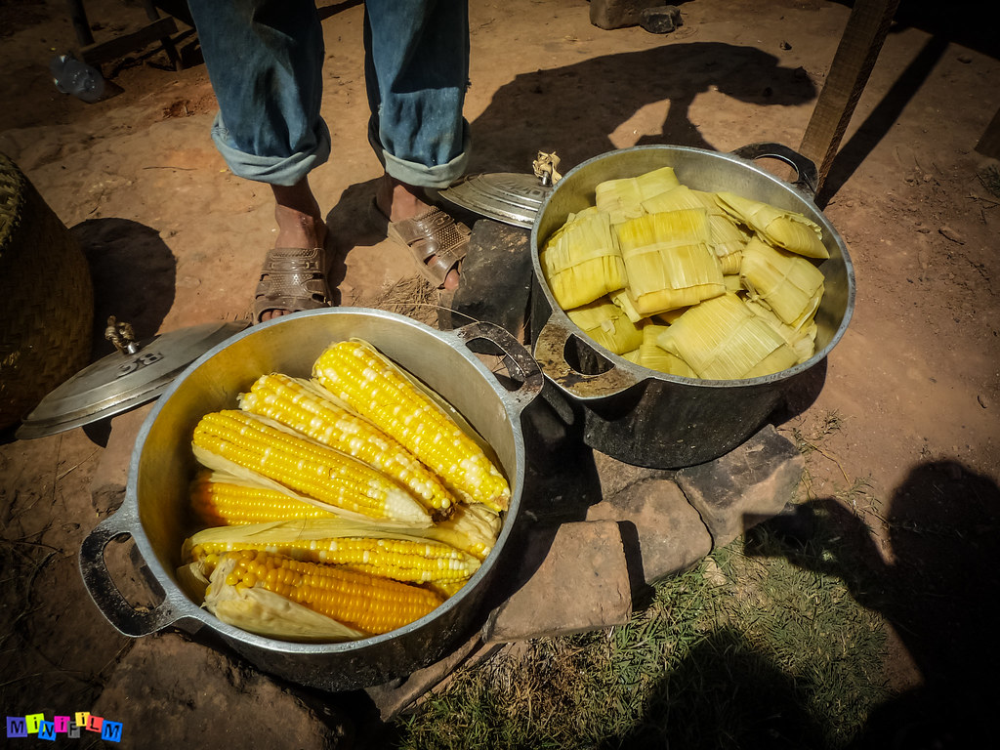

Katsaka

Description
Rehefa makany Ambatomirahavavy dia solovolo no fiantso azy io. Ilay
katsaka maitso no asiana akondro sy siramamy dia atao feta; fonosina dia
atao bain marie dia vita.
Rehefa mikiky katsaka amin’ny sivana dia tandremana mba tsy anaraka ny
hodi-manify mba ho malefaka tsara ilay feta azo.
Ingredients
- Katsaka maitso
- Akondro
- Siramamy
- Rano
Steps
- Alaina ny katsaka maintso dia esorina hiala ny raviny.
-
Kikisana tsara ao anaty sivana ilay vaoniny mbola maintso hiala amin’ny
tonony.
-
Alaina ny laona dia totona miaraka amin’ny akondro mba halemy tsara.
- Arotsaka ao avy hatrany ny siramamy mba hamamy azy.
-
Velarina miaraka amin’izay avy eo ny ravin’ilay katsaka mbola maintso.
-
Rehefa voavelatra tsara ilay ravina dia araraka tsikelikely amin’ny
sotro ilay katsaka efa voatoto.
-
Fonosina tsara ireo avy eo mba tsy hivaha ilay fonosana rehefa mahandro
azy.
-
Arotsaka ao anaty vilany dia tsara raha asiana tsikalana ilay vilany
mandrapahamasaka azy.
-
Aroso mafana no tena mahatsara azy dia ampiarahana amin’ny dite kely.